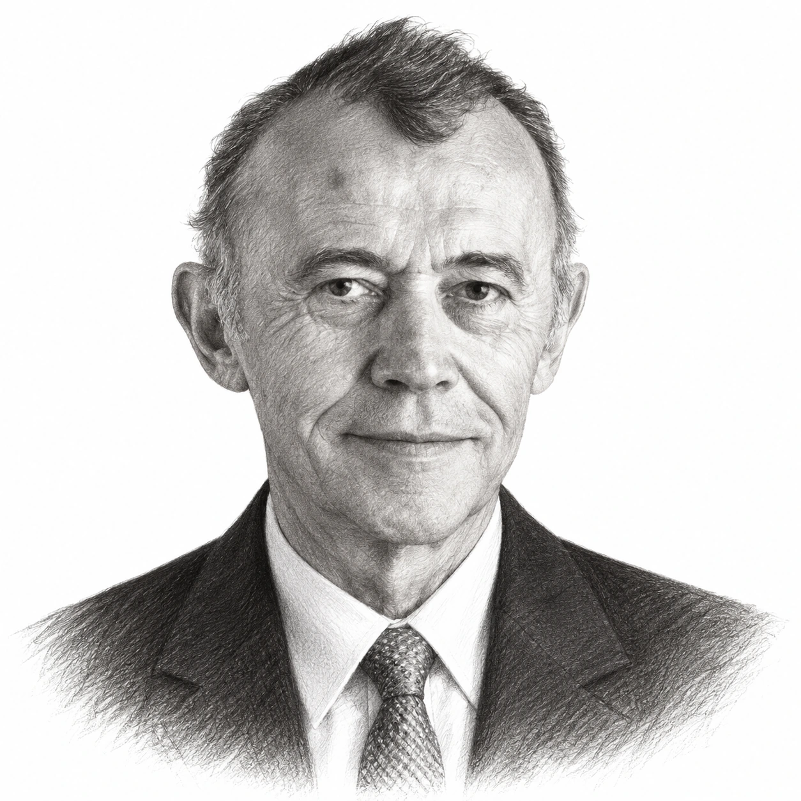
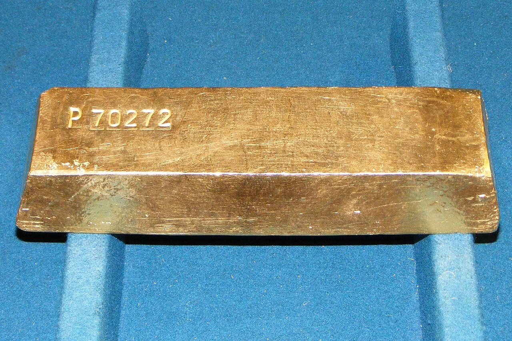

Jean-Marie Eveillard was born in Poitiers, in western France, in January 1940, and he came to investing by way of a business school rather than a trading floor. He sat the entrance examination for HEC, the French business school outside Paris, twice before he was admitted, and he graduated in 1962, in which year Société Générale took him on as a securities analyst in Paris, and he would remain with the bank, in one form or another, until the end of 1999.
However, by his own account the early part of that long association taught him very little. "My first fifteen years at the bank were a waste," Mr Eveillard wrote in his book many years later, because the approach to shares that he was taught in Paris had little to do with what the underlying businesses were worth. In 1968 Société Générale posted him to its New York office, and it was there, through two French students at Columbia Business School, where Benjamin Graham had taught, that he first heard of Graham and purchased The Intelligent Investor and Security Analysis. "It seemed to me that Ben Graham simply made sense," said Mr Eveillard, and The Intelligent Investor "in particular sort of struck me", because it rested on what a business was worth rather than on a forecast.

In 1970 Société Générale launched a small global fund in New York, the SoGen International Fund, and Jean-Marie Eveillard did some of the analysis for it. However, the bank brought him back to Paris in 1974, where his colleagues had little time for the idea of valuing a share as a piece of a business, and he did not return to New York until the end of 1978. On 1 January 1979, at the age of 38, he became the portfolio manager of the SoGen International Fund, which at that point had around $15m in assets. Some accounts put the start in 1978, whereas First Eagle's own records date his responsibility from January 1979, which is the date used here.
The method he brought to the fund was Benjamin Graham's with an element of Warren Buffett's added to it, in that he looked for shares selling at a large discount to a cautious estimate of what the business was worth, paid close attention to the balance sheet because a company with little debt could survive a long period of being out of favour, and distinguished, as Mr Buffett did, between an exceptional business and an ordinary one. However, where Warren Buffett concentrated his money in a few holdings, Jean-Marie Eveillard spread his across more than a hundred, because he was, as he put it, "too worried that it could just blow up" and "too skeptical about my own skills". He also looked everywhere, so that Japanese, Swiss, Korean and American shares sat alongside each other in the fund. "Our time horizon for a security," he said, "is five years, not five months."
What that produced was a fund that made its money largely by losing less than other people in bad years, so that the SoGen International Fund had just two losing calendar years in 26 under Jean-Marie Eveillard, falling 1.3% in 1990 and 0.26% in 1998, and it was out of Japan by 1988, shortly before that market collapsed. "I was more helped by what I did not own than what I did own," said Mr Eveillard. In 1993 he took on two more funds at their launch, the SoGen Overseas Fund and the SoGen Gold Fund, and gold became a permanent feature of the main fund as well, usually at around 5% of assets, held not because it had a calculable value but against events that would hurt everything else he owned. "We look at it as insurance," he said in 2007. "The fact that the price is up means that the insurance premium has become more expensive."
The fund's assets had grown from around $15m in 1979 to roughly $6bn by the autumn of 1997, although asset growth of this kind reflects money flowing in as well as performance and is not a measure of return, and it was at that point that Jean-Marie Eveillard's career came to its most difficult passage. From 1997 onwards the shares that drove markets upwards were in technology, media and telecommunications, and Jean-Marie Eveillard would not own them, because he could not value a business with no profits at a price that assumed it would always grow. At the end of 1999 the fund had less than 5% of its assets in technology and telecommunications shares, whereas those sectors made up 32.5% of the MSCI World index, and the result was three years in which the fund lagged the market badly. "After one year, your shareholders are upset," said Mr Eveillard later. "After two years, they're furious. After three years, they're gone."
That is more or less what happened, because in less than three years, between the autumn of 1997 and the spring of 2000, the fund "lost seven out of ten shareholders", as Mr Eveillard put it in 2008, and its assets fell from around $6bn to around $2.5bn. Within Société Générale, which was by then trying to sell the business, an executive is reported to have described him as "half senile", and Jean-Marie Eveillard did not pretend that the pressure left him untouched. "You do, in truth, start doubting yourself," he said. "Everybody seems to see the light. How come I don't see it?" There were, he admitted, "days when I thought I was an idiot".
The sale took more than a year, because an agreement reached in August 1998 to sell the management company to Liberty Financial of Boston for up to $216m, with a price that could be cut if redemptions continued, did not complete. Instead, in October 1999, Société Générale agreed to sell its 80.1% of the business to Arnhold and S. Bleichroeder, a private New York investment firm, while Jean-Marie Eveillard, who owned the remaining 19.9%, agreed to sell his shares in instalments and signed a five-year employment agreement. The deal closed around the turn of 2000, and the SoGen International Fund became the First Eagle SoGen Global Fund, later First Eagle Global.
The timing could hardly have been better for the buyer, because the technology boom broke in March 2000, and Jean-Marie Eveillard's fund made around 10% in each of 2000, 2001 and 2002, by Morningstar's figures, in three years in which the S&P 500 lost money every time, before gaining 38% in 2003 and 18.7% in 2004. For 2001 Morningstar named Jean-Marie Eveillard and Charles de Vaulx, whom he had hired as an analyst in 1987 and later made his co-manager, as its International Stock Managers of the Year, and in 2003 it gave him its first Fund Manager Lifetime Achievement Award, by which time he had given the line for which he is best known. "I would rather lose half our shareholders, which we did," said Mr Eveillard in November 2002, "than lose half of our shareholders' money, which we did not."
The record of his first period in charge, from 1 January 1979 to 31 December 2004, is the one that belongs to him. Over those 26 years the fund returned 15.8% a year, compounded, by Morningstar's calculation, against 13.7% for the S&P 500, while against the MSCI World index the figure usually cited is 15.7% or 15.8% against 11.3%. Putting this another way, $1,000 invested at the start of 1979 had grown to nearly $45,000 by the end of 2004, against around $16,000 in the index. These are total returns on the fund's main share class after its annual expenses but before any initial sales charge, as is usual with such figures, and they describe a period that included a long bull market in shares and bonds, so that they are a record of the past and not a forecast.

Jean-Marie Eveillard retired at the end of 2004, handing the funds to Charles de Vaulx and taking a senior advisory role from January 2005, and the handover appeared to have gone well, because First Eagle Global returned 14.9% in 2005 and 20.5% in 2006 under its new manager. However, in March 2007 Charles de Vaulx resigned without public explanation. "It was very abrupt," said Mr Eveillard, who was in Paris at the time and was asked to be back at his desk the following Monday, and who later insisted that the departure "had nothing to do with the returns of the fund". He resumed management of First Eagle Global, Overseas, Gold and US Value from 26 March 2007, so that at 67 he was again responsible for around $36bn, of which First Eagle Global accounted for $22.1bn, although he had not come back for the sake of it. "Americans tend to believe that God didn't place them on this earth to do nothing," he said. "They feel guilty." He had, he added, "no intention of having a second career".
The second stint lasted two years and ran straight into the financial crisis, which Jean-Marie Eveillard had partly anticipated, because he had been saying since at least 2007 that "we're at the tail end of a global credit boom", he held almost no bank or housebuilding shares, and he kept cash at around 18% of the fund because he could not find enough to purchase at a reasonable price. The fund still fell in 2008, although by less than the world index, and he later observed that the problem for value investors that year was that "they didn't see the financial crisis coming". In September 2008 Matthew McLennan joined from Goldman Sachs Asset Management as co-manager of the Global and Overseas funds, and in March 2009 Jean-Marie Eveillard stepped back for the second time, becoming a senior adviser to the firm and remaining a trustee of the funds, a post he had held since June 2008.
He stayed close to the firm for another decade, teaching at Columbia Business School and sitting on the board of trustees until September 2019, and in July 2019 he gave €1.5m to HEC Paris for a chair in value investing. His book, published in French, German and Spanish and then in English as "Value Investing Makes Sense", set down what he had learned, including his mistakes, among them an 80% loss on Swissair when the airline failed in 2001. First Eagle announced his retirement as senior adviser in 2020, and by the middle of 2026 its own fund literature described him simply as a retired senior adviser and portfolio manager, while the since-inception figures it publishes for First Eagle Global now cover more than 17 years under Matthew McLennan and his colleagues and are the fund's record rather than his. As of October 2026 no announcement of his death had been made; he turned 86 in January 2026.
His explanation for why so few people invest as he did had nothing to do with intelligence. "Most people aren't cut out for value investing, because human nature shrinks from pain," he wrote, and he returned again and again to the point that had first drawn him to Benjamin Graham in 1968. "You have to be humble because the future is uncertain," said Mr Eveillard. "Most people refuse to accept that."

The record
| Period | Fund | Fund return | Benchmark | Basis and source |
|---|---|---|---|---|
| 1 Jan 1979 – 31 Dec 2004 | SoGen International / First Eagle Global, Class A | 15.8% a year | S&P 500: 13.7% a year | Morningstar figures as cited by Fortune (June 2007) and Columbia's Graham & Doddsville (Winter 2008) |
| 1979 – 2004 | Same fund | 15.7% or 15.76% a year | MSCI World: 11.3% a year | MoneyWeek (2017) and MOI Global, the latter citing Eveillard's book; $1,000 to nearly $45,000 vs around $16,000 |
| 1990 | Same fund | −1.3% | — | One of two losing calendar years in 26 (Fortune/Morningstar) |
| 1998 | Same fund | −0.26% | — | The other losing year (Fortune/Morningstar) |
| 2001, 2002, 2003, 2004 | Same fund | +10.5%, +10.5%, +38%, +18.7% | S&P 500 fell in 2001 and 2002 | Fortune/Morningstar, June 2007 |
| 2005, 2006 | First Eagle Global under Charles de Vaulx | +14.9%, +20.5% | — | Fortune/Morningstar; not Eveillard's record |
| Mar 2007 – Mar 2009 | First Eagle Global, second stint | −11.8% a year | MSCI World: −25.5% a year | Secondary accounts of Eveillard's book (Novel Investor); endpoints not stated |
| 1 Jan 1979 – 30 Jun 2026 | First Eagle Global, Class A, no sales charge | 12.60% a year | MSCI World: 10.17% a year | First Eagle Global Fund investor guide, June 2026; includes successor managers |
| Autumn 1997 – spring 2000 | Fund assets | c. $6bn to c. $2.5bn | — | Eveillard, Graham & Doddsville 2008; "seven out of ten shareholders" left. Asset flows, not returns |
The 1979–2004 figures are total returns on the fund's main (Class A) share class, after annual fund expenses and before any initial sales charge, as Morningstar normally calculates them; the sources do not all state this explicitly. Secondary accounts differ slightly in the rate (15.7%, 15.76%, 15.8%) and in the benchmark used, with Morningstar-based accounts comparing the fund with the S&P 500 and the book-based accounts with the MSCI World index, which for a global fund is the more relevant comparison. The 2007–2009 figures could not be checked against a primary source. The since-inception figure to 2026 is First Eagle's and covers 17 years of successor managers, so it is a record of the fund rather than of Jean-Marie Eveillard. None of these compound rates is a forecast.
Life in dates
- 1940Born in Poitiers, France, in January.
- 1962Graduates from HEC Paris and joins Société Générale as a securities analyst.
- 1968Posted to Société Générale's New York office, where he reads Benjamin Graham.
- 1970Société Générale launches the SoGen International Fund in New York; Eveillard does analysis for it.
- 1974Returns to Paris.
- 1979Becomes portfolio manager of the SoGen International Fund on 1 January, with around $15m in assets.
- 1987Hires Charles de Vaulx as an analyst.
- 1988Sells the fund's last Japanese shares.
- 1993Takes on the SoGen Overseas and SoGen Gold funds at their launch.
- 1997–2000Refuses to own technology, media and telecommunications shares; seven out of ten shareholders leave and assets fall from around $6bn to $2.5bn.
- 1998Société Générale agrees in August to sell the business to Liberty Financial; the deal does not complete.
- 1999Société Générale agrees in October to sell its 80.1% to Arnhold and S. Bleichroeder; Eveillard sells his 19.9% in instalments. The fund becomes First Eagle SoGen Global.
- 2001Launches First Eagle US Value. Named Morningstar International Stock Manager of the Year with Charles de Vaulx.
- 2003Receives Morningstar's first Fund Manager Lifetime Achievement Award.
- 2004Retires as portfolio manager on 31 December; becomes senior adviser from January 2005.
- 2007Charles de Vaulx resigns in March; Eveillard resumes management of four funds from 26 March.
- 2008Joins the funds' board of trustees in June; Matthew McLennan joins as co-manager in September.
- 2009Steps back to senior adviser in March. Finalist for Morningstar's fund manager of the decade for non-US shares.
- 2019Endows the Jean-Marie Eveillard Chair in Value Investing at HEC Paris with €1.5m in July; leaves the board of trustees in September.
- 2020First Eagle announces his retirement as senior adviser.
- 2026Turns 86 in January; described by First Eagle as a retired senior adviser and portfolio manager.
Sources
- SoGen Funds supplement, 29 October 1999 (SEC) and proxy statement, 1999 (SEC): sale of SGAM Corp to Arnhold and S. Bleichroeder, the 80.1%/19.9% ownership, Eveillard's employment agreement, fund renaming.
- SoGen Funds proxy Q&A, 1998 (SEC): Société Générale's decision to leave the US retail fund business and the Liberty Financial agreement.
- Financial Planning, 9 November 1998: Liberty Financial terms ($216m), redemptions and the possible price cut.
- First Eagle Funds supplement, 3 May 2007 (SEC): de Vaulx's resignation; Eveillard's resumption effective 26 March 2007; his management history from 1979.
- First Eagle Funds supplement, 12 September 2008 (SEC): Matthew McLennan joins as co-manager.
- First Eagle Funds supplement, 15 October 2019 (SEC): senior adviser since March 2009, trustee from June 2008 to September 2019, trustee emeritus.
- First Eagle Global Fund investor guide, 30 June 2026 and 31 March 2023 edition: since-inception returns from January 1979, technology weighting at end-1999, his described status as retired.
- First Eagle: Jean-Marie Eveillard Retires as Senior Advisor: the 2020 retirement announcement (headline only; the page text could not be retrieved).
- Graham & Doddsville, Winter 2008 (Columbia Business School): discovering Graham, the 1997–2000 redemptions and asset figures in his own words, Morningstar's 15.8% vs 13.7%.
- CNN/Money, 22 November 2002: "I would rather lose half our shareholders..." quotation, gold as insurance, 2001 Morningstar award.
- Fortune, 19 June 2007: 15.8% vs 13.7% (Morningstar), losing years, 2001–2006 annual returns, fund assets in 2007, gold as insurance, credit boom, "my babies".
- Kiplinger, 30 March 2007: de Vaulx's departure, "very abrupt", "no intention of having a second career", returns in 2000–2002.
- Institutional Investor, 11 June 2007: the call to Paris, "Americans tend to believe...".
- William Green, Barron's Asia, 2015, as reproduced by Hedge Fund Alpha: "After one year...", self-doubt quotations, "half senile", 70% of shareholders, Japan 1988, concentration.
- MOI Global: Jean-Marie Eveillard quotations and references: HEC entrance, 1974 return to Paris, Smith Barney, asset milestones, 15.76%, "what I did not own", 2008 remarks, Swissair.
- Novel Investor: notes on Value Investing Makes Sense: book quotations, 15.8% vs 11.3%, 2007–2009 figures, Columbia students.
- MoneyWeek, 24 February 2017: 15.7% vs 11.3%, $1,000 to nearly $45,000 vs $16,000.
- HEC Paris, 15 July 2019: the €1.5m chair, management dates, book editions.
- Morningstar Fund Manager of the Year winners: 2001 International Stock award shared with Charles de Vaulx.
- The Wall Street Transcript, 9 February 2004: "five years, not five months", career summary.
- Financial Advisor magazine, c. 2003: de Vaulx hired 1987, Graham in the late 1960s, Paris scepticism.
- Valor Editions author page: Poitiers 1940, career dates, French book title.
- Wikipedia: Jean-Marie Eveillard: 2009 fund manager of the decade finalist, Columbia teaching (secondary; used only for these points).